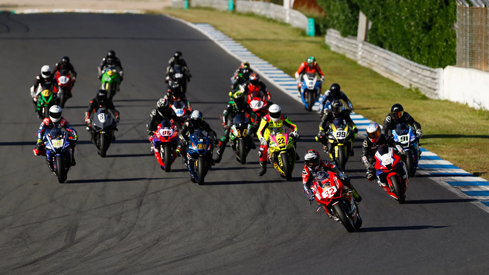

Os primeiros vencedores do CNV 2025

Manhã amena e ensolarada a brindar equipas, pilotos e público no Circuito Estoril para receber a abertura da temporada 2025 do Campeonato Nacional de Velocidade (CNV). Com um total de 69 inscritos para a primeira contenda do ano, o traçado do Estoril seria palco para os duelos iniciais nos pelotões das Superbikes (SBK), Superstock 600 (STK600), Supersport 300 (SSP 300), Premoto 3 (PM3), Naked Bikes (NB), Moto 4 (M4), Moto 5 (M5) e a Copa Dunlop Motoval (CDM).
Um dia pleno de ação, adrenalina e incerteza com treinos cronometrados durante a manhã e as primeiras corridas no período da tarde. Parte integrante do programa desportivo deste fim-de-semana também a 2ª ronda do FIM Sidecar World Championship que como sempre proporciona imagens únicas.
FOTO: João Santos Motorsport
CORRIDA 1 – MOTO4 / MOTO5
Tomás Carneiro assina 1ª vitória da época nas MOTO4 e Tomás Santos é o mais forte nas MOTO5
Com os pelotões alinhados por categorias, entre as MOTO4, Tomás Carneiro assinalava aos comandos da sua BEON o melhor tempo com 2:04.011s, já nas MOTO5, Tomás Santos, da Rosado Team foi o mais forte ao assinar 2:08.145s no crono. No que ao TOP 3 diz respeito entre as MOTO5 Tomás Santos, Tomás Canarias e Diego Ribeiro foram os mais fortes, com Tomás Carneiro e Gonçalo Santos a serem os únicos inscritos nas MOTO4.
Como seria de esperar, consequência da diferença de andamentos entre as duas classes, a grelha apresentava Tomás Carneiro (MOTO4) na Pole acompanhado na primeira linha por Gonçalo Santos (MOTO4) e Tomás Santos (MOTO5). A destacar ainda a presença das pilotos da Fábio Racing Team, Carolina Azevedo e Lara Pinto que partiam da 7ª e 8ª posições respetivamente.
Luz verde para a primeira corrida absoluta da temporada com 10 voltas a cumprir ao traçado do Estoril… Arranque exemplar de Carneiro (MOTO4) que assumia a liderança na travagem para a curva 1, com Gonçalo Santos (MOTO4) e Tomás Santos (MOTO5) no seu encalço. O interesse e incerteza da corrida estavam centrados na luta pelo lugar mais baixo do pódio com Tomás Santos e Diego Ribeiro na contenda nas primeiras voltas. No entanto, esta luta não duraria muito já que Santos se mostrava mais forte e rapidamente abriu uma boa vantagem sobre Ribeiro. Mais para trás, João Cancelinha ocupava o 5º posto à geral e a ser 3º entre as MOTO5.
Num ritmo constante e tendo apenas uma tímida oposição de Gonçalo Santos, Tomás Carneiro liderou do primeiro ao último metro mantendo sempre uma distância confortável sobre o seu opositor. O piloto da Beon marca assim o arranque do campeonato com a primeira vitória e deixa excelentes indicações para a corrida de domingo. Gonçalo Santos seria 2ª à geral com a sua MIR e Tomás Santos 3º.
No TOP3 entre as MOTO4, Tomás Carneiro e Gonçalo Santos. Entre as MOTO4, Tomás Santos, Diego Ribeiro e Tomás Canarias a fechar.
CORRIDA 1 – SSP300 / PREMOTO3
Afonso Almeida vence nas PREMOTO3 e Vasco Camoesas marca o ritmo nas SSP300
Nas SSP300, Tomás Alonso impunha a sua lei, com 1:51.594s e nas PREMOTO3, Afonso Almeida assegurava o lugar cimeiro com 1:52.441s. No TOP 3 das SSP300, Tomás Alonso, Guilherme Gomes e Vasco Camoesas. Entre as PREMOTO3, o TOP3 ficou entregue a Afonso Almeida, Alexandre Cabá e Frederico Guimarães. Para a segunda corrida do dia e primeira da presente época para as SSP300 e PREMOTO3, a Pole ficou nas mãos de Tomás Alonso (SSP300) que dividiu a primeira linha com Afonso Almeida (SSP300) e Alexandre Cabá (PREMOTO3).
Numa das mais interessantes e competitivas corridas do dia, as SSP300 e as PREMOTO3 lançaram-se às 14 voltas programadas e a “mistura” entre as classes no qua à classificação à geral diz respeito foi sempre uma incerteza. A primeira travagem para a curva 1 ditaria a liderança para um motivado Tomás Alonso (SSP300), a levar na sua roda Afonso Almeida (PREMOTO3) e Alexandre Cabá (PREMOTO3).
O ritmo fortíssimo de Alonso permitiu ao piloto da CF Moto ganhar uma vantagem de 3s nas duas primeiras voltas, mas uma queda na curva 7 e consequente abandono acabaram repentinamente com as expectativas de um resultado brilhante para a abertura do campeonato. Quem com esta situação lucrou foi Afonso Almeida que assumia a liderança e rapidamente se desembaraçava de Cabá, já que com 7 voltas cumpridas, Almeida detinha mais de 20s de vantagem sobre o rival da classe. Luta interessante também com Frederico Guimarães e Vasco Camoesas que rodavam e animavam as voltas ao Estoril separados por décimas de segundo. Até final Afonso Almeida manteve a sua Honda nas trajetórias corretas e com uma boa gestão de tempos e estratégia de corrida cortou a linha de meta em primeiro, com Alexandre Cabá a subir ao intermédio do pódio. Frederico Guimarães e Vasco Camoesas discutiram o 3º posto até à 12º volta, momento em que Guimarães logrou abrir 2s de vantagem para tentar gerir até final. Esse esforço final levaria à queda do piloto da Honda na curva 10 entregando de mão beijada o mais baixo do pódio a Vasco Camoesas. Á geral a vitória seria de Afonso Almeida (PREMOTO3), seguido de Alexandre Cabá (PREMOTO3) e Vasco Camoesas (SSP300).
Nos que ao TOP3 por classes diz respeito, entre as PREMOTO3, Afonso Almeida, Alexandre Cabá e Tiago João seriam os protagonistas, com Vasco Camoesas, Martim Garcia e Lourenço Vicente a garantirem o TOP3 nas SSP300.
CORRIDA 1 – TROFÉU NAKED BIKE (NB1 / NB2)
Duarte Amaral agarra P1 nas NB1. Frédèric Bottoglieri de trás para a frente nas NB2
Num pelotão de 17 pilotos inscritos e com as Nakes Bikes divididas pelas classes NB1 e NB2, Duarte Amaral (NB1), levaria a sua BMW S1000R ao lugar cimeiro das NB1 cumprindo a volta mais rápida em 1:47.292s e assinando também a Pole. Luís Franco e Luís Ferreira fechavam TOP3 da classe. Nas NB2, Frédèric Bottoglieri foi o mais forte e marcou no crono 1:49.832s com Marcos Leal e Augusto Machado a fechar TOP3.
Grelha das Naked Bike liderada por Duarte Amaral (NB1) com a Pole. tendo a companhia de Luís Franco (NB1) e Luís Ferreira (NB1). Frédèric Bottoglieri o mais forte entre as NB2 ocupava o 4º posto. Luz verde e o habitual “picanço” até à curva 1 onde quem assumiu as despesas da corrida foi Duarte Amaral com Luís Franco, João Curva (saído da 8º posição da grelha) e Marcos Leal (saído da 10º posição da grelha) a surpreenderem a concorrência.
Duarte Amaral não mais deixaria a dianteira durante as 10 voltas previstas e foi com a autoridade que impôs 10s de vantagem sobre o pelotão na bandeira de chegada, assinando a primeira vitória da época. Luís Franco apesar da incapacidade em acompanhar Amaral, geriu bem a corrida e subiu ao intermédio do pódio com 20 segundos sobre o 3º à geral.
E foi precisamente a luta pelo 3º posto à geral que mais animou a corrida. Com trocas constantes de posição, as primeiras voltas viram Marcos Leal, João Curva e um emergente Frédèric Bottoglieri esgrimir argumentos pelo lugar no pódio. Leal acabaria por se afundar na classificação enquanto Ricardo Almeida e Nuno Farias se juntavam “à festa”… mas o ritmo estava do lado de Bottoglieri que logrou suplantar Curva e Almeida nas voltas finais. O piloto da Triumph ST 765RS acabaria por “encontrar” quase 1s de vantagem e agarrava na linha de meta o 3º posto à geral seguido de Curva, Almeida e Farias.
Por classes, no TOP3 das NB1, Duarte Amaral, Luís Franco e João Curva, nas NB2, Frédèric Bottoglieri, Marcos Leal e Augusto Machado.
CORRIDA 1 – SBK / COPA DUNLOP MOTOVAL (CDM 1 / CDM2) / STK600
Sheridan Morais na P1 das SBK, Martim Jesus agarra o lugar mais alto na STK600
Vasco Silva leva de vencida das CDM1 e Manuel Teixeira domina nas CDM1.
A fechar o primeiro dia de competição, os pelotões nacionais das SBK, STK 600 e Copa Dunlop Motoval fizeram alinhar na grelha 22 pilotos. Pole absoluta para Sheridan Morais (SBK) com 1:42.44s tendo a seu lado na primeira linha para as 15 voltas programadas, Ricardo Lopes (SBK) e Miguel Romão (SBK). Dany Soares, o mais forte entre as CDM2 ocupava o 4º posto na grelha. Martim Jesus, do Team Moto Clube Loulé que se impôs entre as STK600 era 6º e Carlos Pederneira (CMD1) era 10º. Palco montado para a corrida final do primeiro dia de competição do arranque do CNV 2025.
Arranque muito “apertado” com Sheridan Morais, Miguel Romão e Ricardo Lopes (todos SBK) a trocarem de posições entre si na dianteira da corrida nas primeiras curvas com Vasco Silva (CDM2) a colocar a Yamaha R1 na luta. Na entrada da 2ª volta, Lopes impunha a sua experiência e conhecimento do traçado e deixava Romão e Morais a 2s, enquanto Afonso Cruz (SBK) relegava Vasco Silva para 4º. O ambiente estava “quentinho” e à 4ª volta Lopes aumentava a sua distância beneficiando da luta acesa entre Romão e Morais. Entretanto Danny Soares assumia-se como o melhor entre as CDM2 e rodava em 5º com Martim Jesus (STK600) em 6º. O melhor entre as CDM1 era Wagner Pederneira a rodar em 12º.
Volvida apenas uma volta, a 5º, Sheridan Morais desenvencilhava-se de Romão e lançava-se ao ataque para a liderança… 0,467s era a diferença para Lopes num duelo de titãs com Romão já a mais de 3s. Com meia distância de prova cumprida, Lopes que sentiu a pressão de Sheridan conseguia gerir um ínfimo intervalo entre 0,134s e 0,384s para Sheridan… quem venceria?
A luta entre os homens da RL58-Racing School e Mawiki Racing Team prometia levar para a linha de chegada a decisão quando à 14º volta Sheridan ultrapassa Lopes e “foge” para a vitória… e de forma expressiva, com um ganho de 3.9s em volta e meia. Sheridan Morais mostra desta forma ao que vem e assina de forma imperial a primeira vitória da época nas SBK. Ricardo Lopes e Miguel Romão (ambos SBK), são 2º e 3º respetivamente.
Entre as STK600, Martim Jesus vence, sendo 6ª à geral, com Vitor Silva (11º à geral) e Rui Afonso (12º à geral) a fechar TOP3. Nas CMD2, Vasco Silva (6º à geral) foi o mais forte com Ricardo Rodrigues (7º à geral) e Rui Palma (14º à geral) a entrar no TOP3. Nas CMD1, Manuel Teixeira (15º à geral) destacou-se com Tiago Pires (16º à geral) e Afonso de Sousa (18º à geral) a escreverem o seu nome no TOP3.
Circuito Estoril
Mais notícias
Voltar às notícias → MAIS HISTÓRIA A SER ESCRITA: Bulega supera recorde de pontos de longa data de Rea com vitória na Corrida 2 no Estoril
MAIS HISTÓRIA SENDO ESCRITA: Bulega supera recorde de pontos de longa data de Rea com vitória na Corrida 2 no Estoril TEXTO: WorldSBK /…
MAIS HISTÓRIA A SER ESCRITA: Bulega supera recorde de pontos de longa data de Rea com vitória na Corrida 2 no Estoril
MAIS HISTÓRIA SENDO ESCRITA: Bulega supera recorde de pontos de longa data de Rea com vitória na Corrida 2 no Estoril TEXTO: WorldSBK /…
 DE VOLTA AO TOPO: Bulega regressa ao lugar mais alto do pódio à frente de Lecuona; Surra conquista pódio no Estoril
DE VOLTA AO TOPO: Bulega regressa ao lugar mais alto do pódio à frente de Lecuona; Surra conquista pódio no Estoril FONTE & FOTO: WorldSBK…
DE VOLTA AO TOPO: Bulega regressa ao lugar mais alto do pódio à frente de Lecuona; Surra conquista pódio no Estoril
DE VOLTA AO TOPO: Bulega regressa ao lugar mais alto do pódio à frente de Lecuona; Surra conquista pódio no Estoril FONTE & FOTO: WorldSBK…
 WORLDSBK – SEXTA-FEIRA: Bulega supera Surra e Lecuona, mas por pouco por pouco; Oliveira impressiona com 4º lugar em casa.
WORLDSBK – SEXTA-FEIRA: Bulega supera Surra e Lecuona, mas por pouco por pouco; Oliveira impressiona com 4º lugar em casa. FONTE e FOTO:…
WORLDSBK – SEXTA-FEIRA: Bulega supera Surra e Lecuona, mas por pouco por pouco; Oliveira impressiona com 4º lugar em casa.
WORLDSBK – SEXTA-FEIRA: Bulega supera Surra e Lecuona, mas por pouco por pouco; Oliveira impressiona com 4º lugar em casa. FONTE e FOTO:…